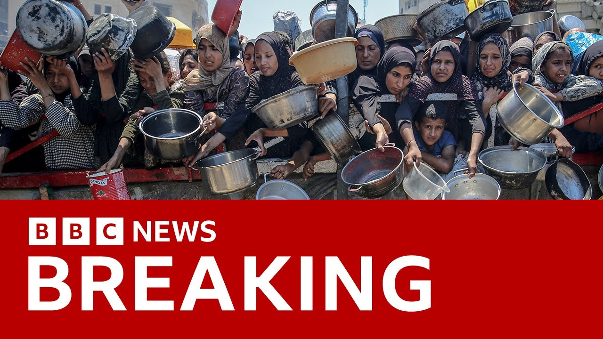

【BBC News 20250728 在国际强压下，以色列开放加沙援助通道｜饥荒危机引发全球关注】
Summary: The Israeli military announced a daily pause in fighting in three Gaza areas to allow UN and humanitarian aid convoys safe passage, following international pressure over starvation warnings. Egypt showed aid trucks lining up at the border, while Israel airdropped food packages criticized as inefficient. Pro-Palestinian activists' aid boat was intercepted by Israeli troops.
摘要： 以色列军方宣布在加沙三个地区每日停火，以便联合国和人道主义援助车队安全通行，此举源于国际社会对饥荒警告的施压。埃及画面显示援助卡车在边境集结，以色列空投食品包裹被批低效。亲巴勒斯坦活动人士的援助船遭以军拦截。

⏱️ Estimated Reading Time: 18 min.
📚 四级生词 📚 六级生词 📚 雅思生词 📚 托福生词 📚 专八生词 📚 SAT生词 📚 考研生词 📚 GRE生词 📚 高考生词 📚 其它生词
In the last hour, the Israeli military has announced a pause in fighting in three areas for humanitarian purposes.
过去一小时，以色列军方宣布在三个地区实施人道主义停火。
Now, this is the scene looking into Gaza from Israel.
这是从以色列眺望加沙的景象。
The IDF says starting today, between 10am and 8pm local time, there will be a pause in military activity in Al-Mawasi, dear Al-Bala and Gaza City every day until further notice.
以色列国防军表示，从今天起当地时间上午10点至晚上8点，阿尔马瓦西、迪尔巴拉和加沙城将每日暂停军事活动，直至另行通知。
It is to allow the safe passage of United Nations and humanitarian aid organization Convoys.
此举旨在确保联合国和人道主义援助组织车队的安全通行。
Now, Egyptian TV has shown these pictures of aid trucks lining up at the border before moving off-driving towards the Gaza Strip.
埃及电视台展示了援助卡车在边境排队等待进入加沙地带的画面。
The Israeli move, which includes opening so-called humanitarian corridors, comes after mounting international pressure and warnings of mass starvation of Palestinians in the territory.
以色列包括开放所谓人道主义走廊的举措，是在国际压力加剧和该地区巴勒斯坦人面临大规模饥荒警告后采取的。
The Israeli military says its planes also dropped seven packages of aid into Gaza earlier this morning containing flour, sugar and canned food.
以色列军方称今晨还向加沙空投了七包含面粉、糖和罐头的援助物资。
The IDF released these pictures of that.
以色列国防军发布了相关照片。
But the aid agencies say the method is inefficient, dangerous, and a distraction.
但援助机构称这种方式效率低下、危险且转移注意力。
Israeli troops have boarded a boat that was trying to bring aid to Gaza by sea.
以色列军队登上一艘试图通过海路向加沙运送援助的船只。
The pro-Palestinian Friedham-Fletilla coalition said the vessel, Handala, was intercepted in international waters.
亲巴勒斯坦的弗里德姆船队联盟称"汉达拉"号在国际水域被拦截。
Video footage showed activists on board, with their hands up as soldiers took control before the feed cut out.
视频显示活动人士举手投降，士兵控制船只后画面中断。
Let's go live to our Middle East correspondent Amir Nada, who's in Jerusalem, and our Gaza correspondent, Rishdi Abeluf, who joins us from Istanbul.
现在连线我们在耶路撒冷的中东记者阿米尔·纳达，以及在伊斯坦布尔的加沙记者里什迪·阿贝鲁夫。
Amir, if I can start with you, what do we know about this breaking news of these pauses in fighting in some areas of Gaza?
阿米尔，首先请告诉我们关于加沙部分地区停火的最新消息。
Well, the areas that they've announced are areas that the Israeli military has previously told Palestinians to go to areas such as El Mawasi, which is a huge tent encampment, a home to thousands of Palestinians who've been displaced there throughout the war.
他们宣布的区域是以色列军方此前指示巴勒斯坦人前往的地方，如阿尔马瓦西——一个容纳数千战争流离失所者的巨大帐篷营地。
So these are already supposed to be areas that are safer areas than elsewhere in Gaza, where the fighting is supposed to be happening at a higher intensity.
这些本应是比加沙其他战斗更激烈地区更安全的地带。
I think the more significant element of this statement is the announcement around humanitarian convoys.
我认为该声明更重要之处在于人道主义车队的安排。
Humanitarian agencies have said one of the issues that they face while trying to bring aid into the Gaza Strip is that their convoys are often attacked by the Israeli military, and then they struggle to get permissions to deliver that aid.
人道机构表示，援助车队常遭以军袭击且难以获得运送许可。
When they do get it, it's unsafe for the civilians that crowd around it.
即便获准，聚集的平民也面临危险。
We saw deadly incidents this weekend and last weekend.
本周末和上周末都发生过致命事件。
So if there's going to be a safe route from the borders of Gaza through to the humanitarian areas such as El Mawasi and the areas where Palestinians are, that could indeed actually have a significant effect on the ability of Palestinians to access aid in Gaza.
若能从加沙边境至阿尔马瓦西等地区建立安全路线，将极大改善巴勒斯坦人获取援助的状况。
Yes, it is interesting.
确实耐人寻味。
The statement from the IDF says this was coordinated with the united nations.
以军声明称此举与联合国协调进行。
We've also seen early this morning air drops by the Israelis.
今晨我们还看到以色列的空投行动。
That's right.
没错。
I mean, I think critics might say that that will do more to sort of have a comms benefit for Israel than an actual impact on the humanitarian situation on the ground.
批评者可能认为这更多是以色列的公关手段，而非实质改善人道状况。
What humanitarian agencies say Palestinians need is for the Gaza Strip to be flooded with convoys of aid trucks, not seven packages dropped from the air.
人道机构强调加沙需要大量援助卡车而非七包空投物资。
Obviously Jordan is looking at doing some air drops too with coordination with the UK after approval from Israel.
约旦也计划在以色列批准后与英国协调空投。
But humanitarian aid agencies say that air drops are not the solution.
但人道机构指出空投非解决之道。
They're ineffective.
它们效率低下。
They are dangerous.
且危险。
Gaza is not far away.
加沙并非偏远地区。
It's not a remote territory.
不需要远程投送。
They just need to allow much more, many more trucks to be delivered inside the Gaza Strip.
只需允许更多卡车进入加沙。
Amir, you mentioned the communication side of things.
阿米尔，你提到传播效应。
How much do you think what Israel is doing over the last 24 hours is because of that mounting international pressure and the pictures that all of us have seen coming out of Gaza?
你认为以色列过去24小时行动有多少是迫于国际压力和加沙惨状影像？
I think it's under huge pressure internationally amongst its allies, amongst the international community, the aid community.
以色列正面临来自盟友、国际社会和援助界的巨大压力。
Clearly it wants to be seen to respond.
显然它希望展现回应姿态。
I guess what we're trying to analyse is whether the response is that it's announcing will actually have the kind of effect that the humanitarian community are calling for.
关键是其宣布的措施能否达到人道机构期待的效果。
In the statement that Israel put out yesterday evening, they actually denied that there's a starvation crisis in Gaza.
昨晚声明中以色列否认加沙存在饥荒危机。
They said that they want to enforce these changes in order to refute the false claim of deliberate starvation.
称这些改变是为驳斥"蓄意制造饥荒"的指控。
So we're in this weird position where Israel is saying it's going to make some changes to the delivery of humanitarian aid in the Gaza Strip.
矛盾的是以色列一方面承诺改善加沙援助输送，
But at the same time saying that there isn't a crisis.
一方面否认危机存在。
Amir, for the moment, thank you.
阿米尔，感谢连线。
Let's go to our Gaza correspondent, Rishdi Avalu, who is in Istanbul.
现在连线在伊斯坦布尔的加沙记者里什迪·阿瓦鲁。
Rishdi, I know you have your family, some of it, in Gaza and you talk to a lot of people there.
里什迪，你部分家人仍在加沙并与当地保持联系。
What is the situation like at the moment?
目前情况如何？
We'll look, we will hope for a bitter permanent solution, but they, in general, they will come.
我们期待持久解决方案，但当前人们普遍欢迎停火。
There are a few people who have access to the social media, we're posting all night and this morning that this is a good move.
能上网的民众整夜发帖称赞此举。
At least we will, some food will be allowed in the air drop.
至少空投能让部分食物进入。
Last night was a chaotic scene.
昨夜场面混乱。
I've seen videos and pictures of people fighting each other.
我看到民众为抢夺食物斗殴的画面。
I mean, punching each other to take some of the food.
为争抢食物大打出手。
This is just to show you how disparate the people who are starving for the food.
可见民众饥饿程度。
Five, six, I think seven packages were counted in the north west of Gaza area called Asudaniya near the Gaza City where we believe maybe 200,000 people are living in tents in the area.
加沙城附近阿斯达尼亚地区仅收到五六包空投物资，当地有约20万帐篷居民。
Most of them were evacuated from Northern Gaza and Eastern Gaza where there is active Israeli military operation in the area.
多数人是从以军行动激烈的北部和东部撤离的。
So all eyes on the border and there are people are waiting for the food to come in because what has been allowed in the last week, which considered the most difficult week since the beginning of the war, people are waiting for the aid to be in and to be distributed, not to be sent to the Gaza humanitarian foundation where people walk.
民众紧盯边境等待援助，上周是战争以来最艰难时期，人们希望物资直接分发而非送至需徒步数小时的危险人道站点。
I mean, for hours, sometimes to get to a very dangerous area, about a thousand people were killed.
约千人曾在前往这些危险区域时丧生。
The people who are all the time demanding that food should be handed over to the UN agencies and to be distributed to the people.
民众一直要求由联合国机构直接分发食物。
I think it is very early to judge whether the amount allowed will be changed the crisis, but it's a good move considered by all Palestinians.
现在判断援助量能否缓解危机为时尚早，但巴勒斯坦人普遍视其为积极举措。
Yes, because the aid agencies say they have those trucks at the border and we've seen pictures of them moving from Egypt, but it is that issue that we mentioned with Amir.
援助机构称卡车已在埃及边境待命，但如阿米尔所言——
It's about the safety of getting those supplies in.
关键是运输安全。
Yes, because you know, about 60% of Gaza and now are under Israeli security control, especially the area where the cruisings that is allowed food in, like Kerem Shalom crossing in Rafa'h, the entire city of Rafa'h is under Israeli control.
加沙60%地区特别是凯雷姆沙洛姆等过境点周边均处于以军控制下。
There is active troop inside it and there is fighting every day in that area.
该地区每日都有交火。
So the trucks, the humanitarian aid agencies always concern about the safety of the drivers and the trucks.
援助机构始终担忧司机和卡车安全。
They need a multiple coordination to enter Rafa'h first and then to go to the border and collect it and they need another coordination to go to the areas and distributed.
需多次协调才能进入拉法、边境提货并分发。
We understand that they might allow food from three different cruisings today, one in south, one in the north and one in the middle.
据悉今日可能开放南、北、中部三个过境点。
So what is the agencies and Gaza are saying that they need a 500 to 600 truck every day for at least a month to, you know, to ease some of the crisis related to the food and water and most important.
机构称加沙每日需要500-600辆卡车持续一个月才能缓解粮水危机。
Not only food, they need medicine for the hospitals and they need a fuel to be able to, you know, run the essential operations in the hospitals in Gaza.
还需药品和维持医院运转的燃料。
I know this is a difficult question, Rishdi.
里什迪，我知道这问题很难——
Is there any optimism amongst the people that you speak to on a daily basis there?
你联系的民众是否抱有希望？
Well, it's hard to find this any level of optimism in Gaza, especially after the, you know, about 48 hours ago when the American envoy Steve Whitkov announced that the Americans and the Israelis are walking away from the, you know, ceasefire talks and though, people were hoping that after months of suffering, the ceasefire were coming to place.
加沙难觅乐观情绪，特别是48小时前美以退出停火谈判后。
The people enjoy a relative calm back in January for about 57 days.
民众曾在一月享受过57天相对平静。
They are used to allow hundreds of trucks every day.
当时每日有数百辆卡车进入。
The markets were somehow stable and people could start, you know, at least to feel a little bit of relief.
市场相对稳定，民众稍得喘息。
Optimism is something very hard to find in Gaza but there is always hope that this step will be like a small step considered by them but could lead to a bigger step or a permanent ceasefire that in the war.
虽难言乐观，人们仍希望这小步能促成停火大计。
Rishdi, thank you very much for your time.
里什迪，感谢连线。
I appreciate it.
非常感谢。
Rishdi talking to us from Istanbul of course because Israel does not allow the BBC or other international media into the territory at the moment.
里什迪从伊斯坦布尔发回报道，因以色列目前禁止BBC等国际媒体进入加沙。
Our world news correspondent Joe Inwood now looks at the aid situation and a warning.
现在由国际新闻记者乔·因伍德分析援助现状并带来警示。
It does contain distressing images in this report.
本报道含令人不安的画面。
Zainab Abu Ali was just six months old when her parents buried her, killed not by the violence of war but by the malnutrition it has brought to Gaza.
六个月大的扎伊纳布死于战争引发的营养不良。
She got also bacterial infection and sipsis so she was unable to swallow and she was a yesterday, came to the hospital as a body because of severe starvation.
她因严重饥饿并发感染无法进食，被送到医院时已成尸体。
There is growing international awareness and anger at the scale of the humanitarian crisis.
国际社会对加沙人道危机的认知与愤怒与日俱增。
Of the nearly 60,000 people who have now been killed since the start of the war, 127 died from malnutrition.
战争致近6万人死亡中，127人死于营养不良。
That figure increased by five in just one day according to the Hamas Run Health Ministry.
哈马斯卫生部称该数字单日新增5例。
To try to tackle the crisis, a series of air drops have been announced.
为应对危机，多国宣布空投计划。
The UK has said it is coordinating with Jordan to take part as it did last year.
英国称正与约旦协调如去年般参与空投。
These were the scenes then but air drops face logistical challenges.
这是去年画面，但空投存在物流难题。
In the last round of aid flights, the US Air Force said each plane carried around 12,600 meals.
美军称每架运输机仅载12,600份餐食。
This means it would take 160 flights every day to provide just one meal a day to the population of Gaza.
意味每日需160架次才能让加沙人日均一餐。
Now the combined transport fleet of the UAE and Jordanian air forces who would carry out the drops is only around 20 aircraft.
而阿联酋和约旦执行空投的运输机总数仅约20架。
Air drops could deliver just a tiny fraction of the aid that trucks could.
空投量远不及卡车运输。
And that has led to this blunt assessment from a leading aid organisation.
这引发主要援助组织的尖锐评价。
There's an obvious solution in Gaza which is to open the borders and allow agencies like the IRC, like our partners in the UN and humanitarian organisations to bring aid in and to distribute it.
加沙的解决方案显而易见——开放边境让援助机构进入。
As we would do in any other crisis on, aid drops fundamentally are a grotesque distraction from that priority.
空投本质是对优先事项的荒谬转移。
We need access, not air drops.
我们需要准入而非空投。
For the issue of access has been a source of intense argument.
准入问题引发激烈争论。
Late last night, Israel announced the opening of a series of humanitarian corridors to refute what it called the false claim of deliberate starvation in the Gaza Strip.
昨晚以色列宣布开放人道走廊，驳斥"蓄意制造饥荒"指控。
But its critics will see it as an emission of the scale of the humanitarian crisis in Gaza, which they say it has caused.
但批评者视此为以色列对加沙人道危机规模的变相承认。
Joe Inwood, BBC News.
BBC新闻，乔·因伍德报道。
The UK is also going to be starting a new scheme to try and evacuate a relatively small number of critically injured children in Gaza to the UK.
英国将启动新计划撤离少量加沙重伤儿童。
I think there have been two transfers so far.
目前已有两批转移。
The charity behind this once 30 children to be brought out from Gaza and evacuated to the UK for treatment as quickly as possible.
发起慈善计划希望尽快转移30名儿童赴英治疗。
Politically, of course, here there is intense growing pressure on the government to do more.
英国国内要求政府采取更多行动的政治压力日增。
In particular, recognise a Palestinian state, 221 MPs from across the House of Commons signed a letter urging the Prime Minister to follow France's example.
特别是承认巴勒斯坦国，下议院221名议员签署联名信，敦促首相效仿法国的做法。
France has said that it will recognise the Palestinian state when the United Nations meets in New York next month.
法国表示将在下月联合国纽约会议期间承认巴勒斯坦国。
So far, though, the government is pushing back on that and holding its long-standing line that a Palestinian state can only be part of a long-term solution to conflict in the Middle East.
但迄今为止，政府仍坚持其一贯立场，认为巴勒斯坦国只能作为中东冲突长期解决方案的一部分。
Although the SNP are saying that as soon as Parliament is back after the summer recess, they're going to be pushing for a vote on that question in the Commons.
尽管苏格兰民族党表示，一旦议会夏季休会结束，他们将推动在下议院就此问题投票。
This is occupying a lot of thinking in government at the moment.
目前这一问题正占据政府的大量考量。
And of course, Kirstama is meeting President Trump tomorrow, Monday, in Scotland for talks.
当然，克里斯塔莫将于明天（周一）在苏格兰与特朗普总统会晤。
And Gaza will, of course, I'd be surprised if he didn't feature in their discussions.
加沙问题无疑将成为他们会谈的重点，否则会令人意外。
It's been right and a reminder we have a live page running with the latest on that announcement from Israel of those tactical pauses in fighting in three parts of Gaza.
需要提醒的是，我们设有实时页面更新以色列宣布在加沙三部分区域实施战术停火的最新消息。
And the fact they're going to open aid corridors, you'll find that on the BBC News website and app.
关于开放援助走廊的详情，您可在BBC新闻网站和应用程序上查阅。